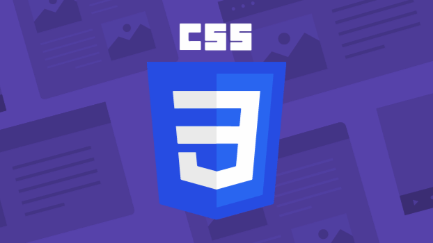

CSS
Pelajari CSS untuk mempercantik tampilan website dan membuat desain yang menarik. Di course ini, kamu akan memahami cara mengatur warna, layout, font, serta efek visual agar halaman web terlihat profesional dan responsif.
Daftar Materi
-
01Pengenalan Dasar20 min
-
02Dasar Penulisan CSS20 min
-
03Menyisipkan CSS ke HTML36 min
-
04Selector & Spesifisitas40 min
-
05Warna, Teks, dan Font12 min
-
06Background & Border40 min
-
07Ukuran, Box Model, & Display8 min
-
08Layouting Dasar25 min
-
09Flexbox (Modern Layout)18 min
-
10Grid Layout (2D Layout Modern)45 min
-
11Responsive Design & Media Query45 min
-
12Transition, Animation, & Transform45 min
-
13Pseudo-class, Pseudo-element, & State Styling45 min
-
14Project45 min
Detail Materi
Durasi
2.5 Jam
Total Materi
12 Modul
Tipe
Front-End
Tentang Materi
Course CSS ini dirancang untuk membantumu menguasai teknik styling pada website. Kamu akan belajar mulai dari dasar penulisan CSS, pengaturan tata letak dengan Flexbox dan Grid, hingga penggunaan animasi dan responsive design.
Cocok untuk pemula yang ingin meningkatkan keterampilan front-end atau siapa pun yang ingin membuat tampilan web lebih menarik dan modern.
Apa yang akan kamu pelajari?
- Memahami dasar penulisan CSS serta cara menyisipkannya ke dalam dokumen HTML
- Mengenal berbagai jenis selector, spesifisitas, dan cara mengatur prioritas styling
- Mampu mengatur warna, teks, font, background, dan border untuk mempercantik tampilan web
- Mengetahui konsep box model, ukuran elemen, dan properti display untuk mengontrol layout
- Menguasai teknik layout modern menggunakan Flexbox dan CSS Grid
- Membuat tampilan yang responsif di berbagai ukuran layar menggunakan media query
- Menambahkan efek interaktif dengan transition, animation, dan transform
- Memahami penggunaan pseudo-class dan pseudo-element untuk styling dinamis
- Membangun satu proyek web sederhana sebagai penerapan seluruh konsep CSS yang telah dipelajari